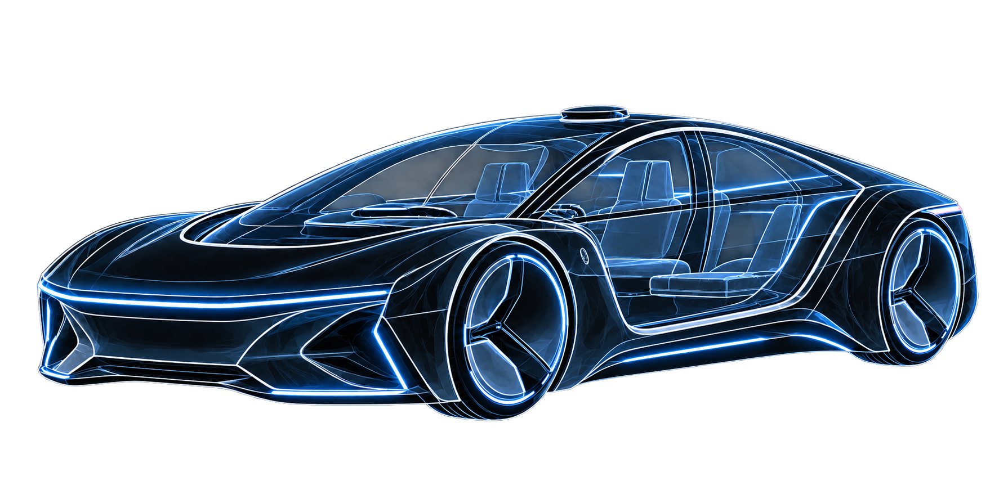
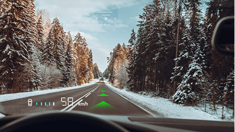
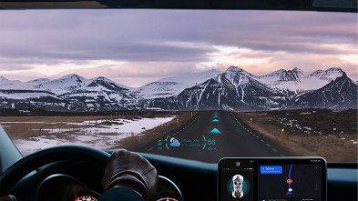
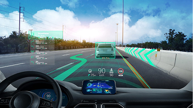
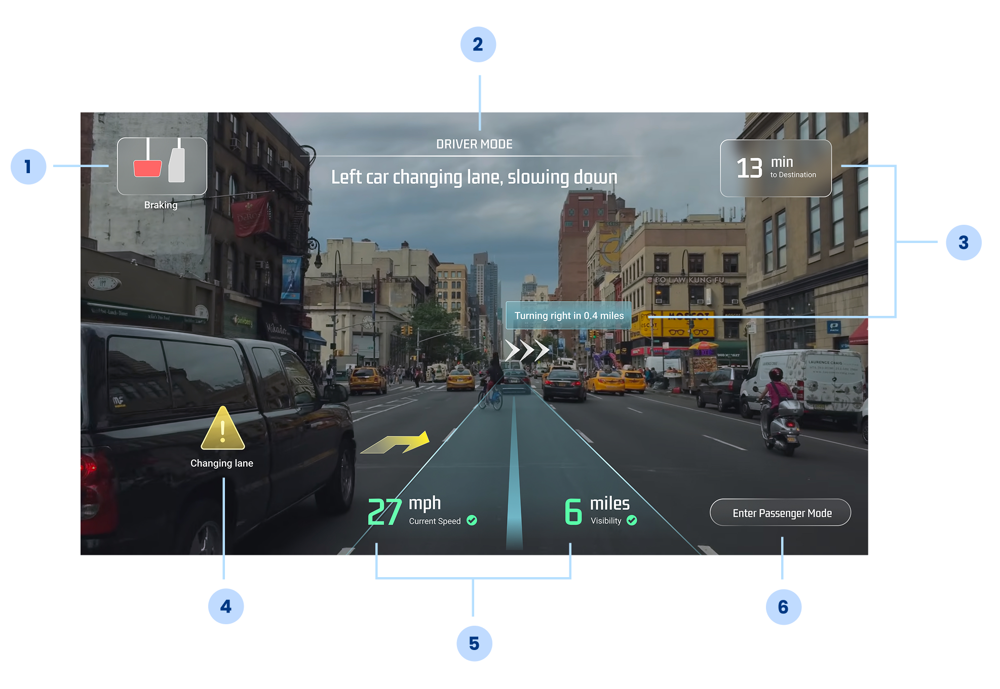

Reluctance to Completely Trust Automation
Users report feeling uncertainty about self-driving vehicles, especially towards higher automation levels.
Emerging Tech Prototype
How do we make it easier for users to transition into an era where vehicles are fully controlled by AI?
RolePlaceholder: Your role
TimelinePlaceholder: Project duration
FocusPlaceholder: Design and prototyping

This is an HMI design challenge I completed at New York University, where my research centered around using designing for self-driving systems future vision. However, I still wanted to inform my visual decisions with user-centered methodology.
Design Question
How can we leverage HMI to improve the self-driving experience?
RESEARCH
This design question is very vague, so I first started dissecting it. There are so many self-driving experiences out there, so what is the specific scenario we’re tackling? I started with conducting user surveys and interviews, asking “What comes to mind when I talk about self-driving cars?”
Interestingly, people often think about full-automation vehicles, the more futuristic, sometimes even scifi perception of it. I’d like to highlight the interesting findings I received. Many users report feeling reluctant about adopting self-driving features due to safety concerns.
Users report feeling uncertainty about self-driving vehicles, especially towards higher automation levels.
Users feel they have to accept self-driving systems because it’s here to stay and increasingly becoming the trend
CONVERGE
With that research, I centered this project around a more North Star area: aiming for Level 5 full automation system because that’s an area that requires the most UX support and user advocacy. Imagine we have that for the future. As a UXD, my role now is to identify how we could facilitate the transition into a fully autonomous era so that users feel safe and more trust toward the system.

RESEARCH
Now, the next piece of the design question: There are so many HMI options. What is the specific medium we need? I researched into existing HMI methods, and that’s when I started looking at AR heads-up display (HUD). I noticed that many companies currently use AR HUD in GPS or ways to alert users of road conditions.



Constraint: It’s important to prioritize information to display so as not to cover objects on the road or distract drivers.
Advantage: When the car is fully autonomous then, while we still need to be careful of cognitive overload, we do have more flexibility on what to display
Constraint: The Optical viewing path of the HUD is different than the road, so drivers need to refocus their eyes when looking across the HUD and the road.
Advantage: This could be a potential problem for a human driver, but less a problem for a self-driving car passenger.
Many existing AR HUD uses colors to identify crucial information, but there should be a secondary explanation that accompanies it.
Defining the Scope
How can we use AR HUD to inform passengers of autonomous vehicle’s system status and intent so that users feel safer in the vehicle?
DEVELOP

05 · Reflection
Placeholder: Summarize what you learned from building and testing the prototype, what worked well, and what you would explore next.